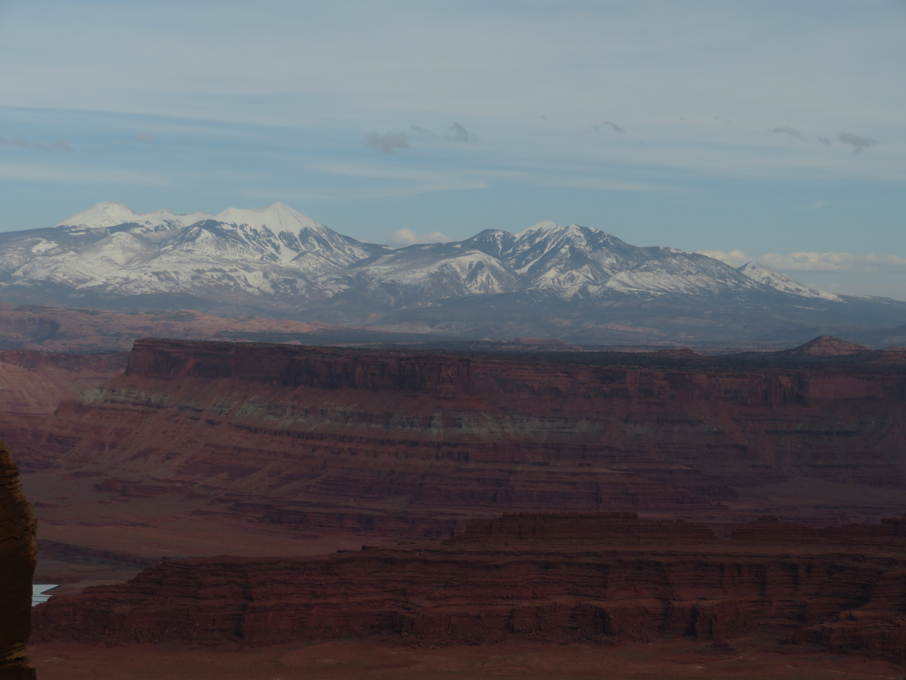
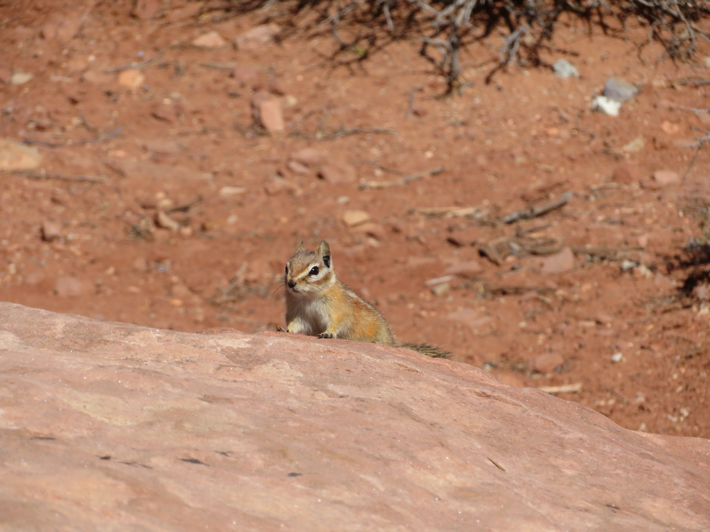

La Sal Mountains Viewpoint

Shafer Canyon Overlook
Canyonlands is the largest national park in Utah and one of the most diverse in terms of desert landscapes. The park is located right next to Arches National Park, containing some of the grandest scenery in all of Utah.
La Sal Mountains Viewpoint
Shafer Canyon Overlook
Canyonlands has tons of crazy canyon views, especially in the Island in the Sky district which I visited. Some notable viewpoints include Shafer Canyon, Green River, and Grand View Overlooks, all containing otherworldly desert scenery with snowy mountains in the backdrop.

Shafer Canyon Overlook

Green River Overlook

Grand View Overlook
The hiking in Canyonlands is extremely impressive, with Mesa Arch being the most famous, containing some otherworldly desert and canyon scenery behind it. Another nice hike is the Upheaval Dome trail, taking you to this peculiar landform which may have been formed from a meteorite collision.

Mesa Arch

Mesa Arch

Upheaval Dome
The nearby Dead Horse State Park right next to the Island in the Sky district is also extremely impressive, with the Colorado river carving this beautiful canyon with snowy mountains in the backdrop.

Dead Horse Canyon

Dead Horse Canyon

Dead Horse Canyon
Canyonlands' otherworldly desert landscape is also home to plenty of wildlife, the most common of which being adorable chipmunks, which were found across the park, as well as lizards, seen on the way to Upheaval Dome.

Chipmunk, Upheaval Dome

Chipmunk, White Rim Overlook

Chipmunk, White Rim Overlook

Lizard, Upheaval Dome